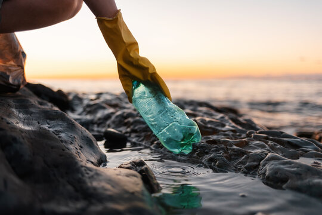

Organizations to Support
Organizations like The Ocean Cleanup, Surfrider Foundation, and Plastic Pollution Coalition are working hard to address ocean pollution. You can donate, volunteer, or spread awareness to support them.
Link: Visit their websites to get involved!
Educational Resources
Educate yourself and others on the impacts of pollution on marine life. Read articles, watch documentaries, and attend local workshops to stay informed!
How to Participate in Cleanups
Join local beach cleanups and community efforts to help clean up the ocean and prevent more waste from reaching the water.
Join the Movement: Save Our Oceans
Every action counts. Whether it's reducing plastic, supporting eco-friendly companies, or simply spreading awareness, you can make a difference.
